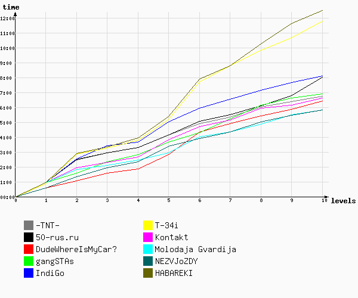

Игра №77
Тип игры: Закрытая
Описание: Игра вне зачета
Принадлежности: 1. 2 автомобиля
2. Фонарик
3. Сотовый телефон
4. Доступ в Интернет
5. Коньки.
6. армейский головной убор
7. шинель
7. Цифровой фотоаппарат
9. деньги в разумном количестве.
| Место | Команда | Уровней пройдено | Время уровней | Всего | ||
|---|---|---|---|---|---|---|
| Активного | Штрафы | Бонусы | ||||
| 1 | НЕЗВЁЗДЫ | 10 | 05:48:30 | 0 | 0 | 05:48:30 |
| 2 | Молодая Гвардия | 10 | 05:49:23 | 0 | 0 | 05:49:23 |
| 3 | DudeWhereIsMyCar? | 10 | 06:41:35 | -15:00 | 0 | 06:26:35 |
| 4 | Контакт | 10 | 06:36:13 | 0 | 0 | 06:36:13 |
| 5 | -TNT- | 10 | 06:44:48 | 0 | 0 | 06:44:48 |
| 6 | gangSTAs | 10 | 06:50:51 | 03:00 | 0 | 06:53:51 |
| 7 | 50-rus.ru | 10 | 07:47:21 | 15:00 | 0 | 08:02:21 |
| 8 | IndiGo | 10 | 08:06:05 | 0 | 0 | 08:06:05 |
| 9 | T-34i | 10 | 11:25:55 | 26:00 | 0 | 11:51:55 |
| 10 | ХАБАРЕКИ | 10 | 11:56:28 | 33:00 | 0 | 12:29:28 |

| 1 | 2 | 3 | 4 | 5 | 6 | 7 | 8 | 9 | 10 | ||
| 1 | DudeWhereIsMyCar? 20:33:59 | DudeWhereIsMyCar? 21:03:31 | DudeWhereIsMyCar? 21:49:13 шт. -15:00 | DudeWhereIsMyCar? 22:06:41 | Молодая Гвардия 22:56:11 | НЕЗВЁЗДЫ 23:53:25 | НЕЗВЁЗДЫ 00:19:58 | Молодая Гвардия 00:51:22 | НЕЗВЁЗДЫ 01:26:58 | НЕЗВЁЗДЫ 01:48:30 | 1 |
| 2 | НЕЗВЁЗДЫ 20:35:19 | gangSTAs 21:19:14 | НЕЗВЁЗДЫ 21:57:43 | НЕЗВЁЗДЫ 22:21:14 | DudeWhereIsMyCar? 23:04:24 | Молодая Гвардия 00:02:01 | Молодая Гвардия 00:21:14 | НЕЗВЁЗДЫ 01:01:25 | Молодая Гвардия 01:31:13 | Молодая Гвардия 01:49:23 | 2 |
| 3 | IndiGo 20:40:27 timeout. 30 мин. шт. -15:00 | НЕЗВЁЗДЫ 21:20:09 | gangSTAs 22:04:39 | Молодая Гвардия 22:27:06 | НЕЗВЁЗДЫ 23:24:12 | gangSTAs 00:15:45 | Контакт 01:08:09 | DudeWhereIsMyCar? 01:40:09 | DudeWhereIsMyCar? 02:07:52 | Контакт 02:36:13 | 3 |
| 4 | Молодая Гвардия 20:40:27 timeout. 30 мин. шт. -15:00 | Молодая Гвардия 21:35:25 | Молодая Гвардия 22:06:53 шт. -15:00 | Контакт 22:40:22 | gangSTAs 23:36:58 | DudeWhereIsMyCar? 00:36:01 | DudeWhereIsMyCar? 01:09:54 | 50-rus.ru 01:50:34 | Контакт 02:09:22 | DudeWhereIsMyCar? 02:41:35 | 4 |
| 5 | 50-rus.ru 20:40:30 timeout. 30 мин. шт. -15:00 | Контакт 21:42:33 | Контакт 22:18:49 шт. -15:00 | gangSTAs 22:46:40 шт. -12:00 | Контакт 23:49:36 | Контакт 00:42:27 | gangSTAs 01:11:30 | Контакт 01:55:45 | -TNT- 02:23:58 | -TNT- 02:44:48 | 5 |
| 6 | gangSTAs 20:40:31 timeout. 30 мин. шт. -15:00 | -TNT- 22:13:28 | 50-rus.ru 22:41:08 | 50-rus.ru 23:04:14 | 50-rus.ru 23:54:36 | 50-rus.ru 00:49:04 | 50-rus.ru 01:14:47 | -TNT- 02:01:45 | 50-rus.ru 02:33:02 | gangSTAs 02:50:51 | 6 |
| 7 | Контакт 20:40:32 timeout. 30 мин. шт. -15:00 | 50-rus.ru 22:14:50 | -TNT- 22:57:31 шт. -15:00 | -TNT- 23:17:13 | -TNT- 00:08:06 | -TNT- 00:54:59 | -TNT- 01:21:13 | gangSTAs 02:06:44 | gangSTAs 02:33:25 | 50-rus.ru 03:47:21 | 7 |
| 8 | -TNT- 20:40:35 timeout. 30 мин. шт. -15:00 | IndiGo 22:18:04 | ХАБАРЕКИ 23:18:37 шт. -12:00 | IndiGo 23:40:42 | IndiGo 01:02:18 | IndiGo 01:56:28 | IndiGo 02:33:40 | IndiGo 03:08:22 | IndiGo 03:40:24 | IndiGo 04:06:05 | 8 |
| 9 | ХАБАРЕКИ 20:40:42 timeout. 30 мин. шт. -15:00 | ХАБАРЕКИ 22:38:04 | T-34i 23:23:51 шт. -15:00 | ХАБАРЕКИ 23:53:57 | T-34i 01:19:45 | T-34i 03:20:06 timeout. 30 мин. | ХАБАРЕКИ 04:14:09 | T-34i 05:27:10 | T-34i 06:17:11 | T-34i 07:25:55 | 9 |
| 10 | T-34i 20:44:26 timeout. 30 мин. шт. -19:00 | T-34i 22:43:59 | IndiGo 23:25:06 шт. -15:00 | T-34i 23:54:54 | ХАБАРЕКИ 01:20:30 | ХАБАРЕКИ 03:20:48 timeout. 30 мин. | T-34i 04:24:30 | ХАБАРЕКИ 05:41:40 | ХАБАРЕКИ 07:03:25 | ХАБАРЕКИ 07:56:28 | 10 |
| 1 | 2 | 3 | 4 | 5 | 6 | 7 | 8 | 9 | 10 |
Уровень 1.
| № | Команда | Старт | Завершение | Штраф | Продолжительность | Бонусы |
|---|---|---|---|---|---|---|
| 1 | DudeWhereIsMyCar? | 20:00:13 | 20:33:59 | 33:46 | ||
| 2 | НЕЗВЁЗДЫ | 20:00:14 | 20:35:19 | 35:05 | ||
| 3 | T-34i | 20:04:13 | 20:44:26 | timeout 30шт. -19:00 | 51:13 | |
| 4 | Молодая Гвардия | 20:00:13 | 20:40:27 | timeout 30шт. -15:00 | 55:14 | |
| 5 | IndiGo | 20:00:12 | 20:40:27 | timeout 30шт. -15:00 | 55:15 | |
| 6 | 50-rus.ru | 20:00:14 | 20:40:30 | timeout 30шт. -15:00 | 55:16 | |
| 7 | gangSTAs | 20:00:13 | 20:40:31 | timeout 30шт. -15:00 | 55:18 | |
| 8 | Контакт | 20:00:12 | 20:40:32 | timeout 30шт. -15:00 | 55:20 | |
| 9 | -TNT- | 20:00:12 | 20:40:35 | timeout 30шт. -15:00 | 55:23 | |
| 10 | ХАБАРЕКИ | 20:00:12 | 20:40:42 | timeout 30шт. -15:00 | 55:30 |
Задание Полевое :
Приветствую вас, рядовой. В армии дураки не нужны, поэтому вы здесь :) С учетом того, что мы готовим вас к диверсионным действиям, начнем сразу и без промедлений.
Итак, сегодня в 20:04 вы отправляетесь в тыл врага. В электричке вы встретитесь с информатором. Он легко вас узнает – по одежде и паролю «Простите, на какой станции находится военная часть прапорщика Шматко?» Что касается одежды, то, чтобы как можно меньше выделяться из толпы, во избежание случайного узнавания со стороны вражеского патруля, вы надели шинель, фуражку и обулись в самые обычные, неприметные коньки.
Внимание! Продолжительность уровня – 40 минут. Штраф за таймаут – 15 минут
Внимание! На уровне нестандартное время появления подсказок: 1-я подсказка - через 10 минут, 2-я - через 25 минут.
По вопросам, возникающим во время игры, обращаться по телефонам:
8-926-6388868 /VS/
8-926-1995622 /Nastine/

Задание Координаторское :
Среди прочих в Москве он выделяется тем, что его название указывает на большее территориальное образование, чем названия остальных. Назовите режиссера одноименного фильма.
Форма ответа: схфамилия
Уровень 2.
| № | Команда | Старт | Завершение | Штраф | Продолжительность | Бонусы |
|---|---|---|---|---|---|---|
| 1 | DudeWhereIsMyCar? | 20:33:59 | 21:03:31 | 29:32 | ||
| 2 | gangSTAs | 20:40:31 | 21:19:14 | 38:43 | ||
| 3 | НЕЗВЁЗДЫ | 20:35:19 | 21:20:09 | 44:50 | ||
| 4 | Молодая Гвардия | 20:40:27 | 21:35:25 | 54:58 | ||
| 5 | Контакт | 20:40:32 | 21:42:33 | 01:02:01 | ||
| 6 | -TNT- | 20:40:35 | 22:13:28 | 01:32:53 | ||
| 7 | 50-rus.ru | 20:40:30 | 22:14:50 | 01:34:20 | ||
| 8 | IndiGo | 20:40:27 | 22:18:04 | 01:37:37 | ||
| 9 | ХАБАРЕКИ | 20:40:42 | 22:38:04 | 01:57:22 | ||
| 10 | T-34i | 20:44:26 | 22:43:59 | 01:59:33 |
Задание Полевое :
Поздравляю, ефрейтор. Вы прибыли на место. Новые казармы ни к чему, сразу на задание. Не забывайте, чем меньше людей вас увидит, на протяжении всех боевых операций, тем дольше вы проживете.
Информатор сообщил, что в наше время высоких компьютерных технологий, вам потребуется добывать ключи и коды для взлома вражеских серверов. И сейчас вам требуется найти код, который записан около номера 46. Номер 176П находится на проезде, сокращение названия которого дает нам две заветные буквы. Удачи.
Задание Координаторское :
Если бы вы изучали рисунки погон стран Варшавского блока, то вы бы заметили, что не у всех стран этих погон одинаковое количество. Перечислите страны, у которых их значительно меньше.
Форма ответа сх+страны в алфавитном порядке (например: "схГДРПольшаРумыния")
Уровень 3.
| № | Команда | Старт | Завершение | Штраф | Продолжительность | Бонусы |
|---|---|---|---|---|---|---|
| 1 | Молодая Гвардия | 21:35:25 | 22:06:53 | шт. -15:00 | 16:28 | |
| 2 | Контакт | 21:42:33 | 22:18:49 | шт. -15:00 | 21:16 | |
| 3 | T-34i | 22:43:59 | 23:23:51 | шт. -15:00 | 24:52 | |
| 4 | 50-rus.ru | 22:14:50 | 22:41:08 | 26:18 | ||
| 5 | ХАБАРЕКИ | 22:38:04 | 23:18:37 | шт. -12:00 | 28:33 | |
| 6 | -TNT- | 22:13:28 | 22:57:31 | шт. -15:00 | 29:03 | |
| 7 | DudeWhereIsMyCar? | 21:03:31 | 21:49:13 | шт. -15:00 | 30:42 | |
| 8 | НЕЗВЁЗДЫ | 21:20:09 | 21:57:43 | 37:34 | ||
| 9 | gangSTAs | 21:19:14 | 22:04:39 | 45:25 | ||
| 10 | IndiGo | 22:18:04 | 23:25:06 | шт. -15:00 | 52:02 |
Задание Полевое :
Товарищ сержант! Внимание! Экстренное сообщение! Генерал-полковнику центрального штаба срочно требуется фотокарточка вас и шести ваших товарищей на танке. Высылать фото на cxmoscow@gmail.com и позвонить по телефону 89261995622
Бонус: Если хотя бы трое будут надлежаще обмундированы (по образу и подобию первого задания)- минус 15 минут.
Подсказок не будет.
Фото больше 0,5 мегабайт не рассматриваются.
Задание Координаторское :
ДРКА - ДКА - ДСАИВМФ - ???- ДЗО
Форма ответа сх+ 8 или 11 букв.
Д = День
вчерашний день до прошлого года
Уровень 4.
| № | Команда | Старт | Завершение | Штраф | Продолжительность | Бонусы |
|---|---|---|---|---|---|---|
| 1 | IndiGo | 23:25:06 | 23:40:42 | 15:36 | ||
| 2 | DudeWhereIsMyCar? | 21:49:13 | 22:06:41 | 17:28 | ||
| 3 | -TNT- | 22:57:31 | 23:17:13 | 19:42 | ||
| 4 | Молодая Гвардия | 22:06:53 | 22:27:06 | 20:13 | ||
| 5 | Контакт | 22:18:49 | 22:40:22 | 21:33 | ||
| 6 | 50-rus.ru | 22:41:08 | 23:04:14 | 23:06 | ||
| 7 | НЕЗВЁЗДЫ | 21:57:43 | 22:21:14 | 23:31 | ||
| 8 | gangSTAs | 22:04:39 | 22:46:40 | шт. -12:00 | 30:01 | |
| 9 | T-34i | 23:23:51 | 23:54:54 | 31:03 | ||
| 10 | ХАБАРЕКИ | 23:18:37 | 23:53:57 | 35:20 |
Задание Полевое :
Лейтенант, вам срочно требуется прибыть на пересечение шоссе и верхней улицы, названной в честь реки. Вам нужен дом, номер которого состоит из двух последовательных цифр.
Напоминаем, что длина реки - 16 километров, а средний расход 0,5 м3/с.
Код нестандартный.
Задание Координаторское : 
Наверняка вам хорошо известен этот портрет. А кто на нём изображён?
Форма ответа: сх+имяфамилия

Уровень 5.
| № | Команда | Старт | Завершение | Штраф | Продолжительность | Бонусы |
|---|---|---|---|---|---|---|
| 1 | Молодая Гвардия | 22:27:06 | 22:56:11 | 29:05 | ||
| 2 | gangSTAs | 22:46:40 | 23:36:58 | 50:18 | ||
| 3 | 50-rus.ru | 23:04:14 | 23:54:36 | 50:22 | ||
| 4 | -TNT- | 23:17:13 | 00:08:06 | 50:53 | ||
| 5 | DudeWhereIsMyCar? | 22:06:41 | 23:04:24 | 57:43 | ||
| 6 | НЕЗВЁЗДЫ | 22:21:14 | 23:24:12 | 01:02:58 | ||
| 7 | Контакт | 22:40:22 | 23:49:36 | 01:09:14 | ||
| 8 | IndiGo | 23:40:42 | 01:02:18 | 01:21:36 | ||
| 9 | T-34i | 23:54:54 | 01:19:45 | 01:24:51 | ||
| 10 | ХАБАРЕКИ | 23:53:57 | 01:20:30 | 01:26:33 |
Задание Полевое :
Товарищ старший лейтенант, вы срочно должны освободить нашего товарища из плена. Для конспирации, его повезут на трамвае :). Вначале по одному из переулков нового «замкадья», потом по улице погибшего милиционера. В месте их соединения, вам требуется обосноваться в бункере точно под трамвайными путями и ждать указаний.
Внимание, рядом проходит железная дорога. Она находится под пристальным взором нашего врага. Поэтому будьте бдительны, она вам не нужна.
Задание Координаторское :
Для дешифровки получена карта со следующими пояснениями:
1) ЗАО МАШТЕКСТИЛЬИМПЭС
2) ТРАВМПУНКТ ПРИ ПОЛИКЛИНИКЕ N 211 ЮЖНОГО АО
3) ЛИГА ПЛЮС ЛТД
4) Школа № 352
5) ДЕТСКИЙ САД № 1701
6) МЕЖРЕГИОНАЛЬНАЯ ОБЩЕСТВЕННАЯ ОРГАНИЗАЦИЯ ОПЕРАЦИОННЫХ СЕСТЕР
Код русскими буквами.
2) Варшавское шоссе, 148 к.1
3) Бауманская 47/1
4) Малахитовая, 15
5) Тюленева 5-2
6) Щукинская, 1
Уровень 6.
| № | Команда | Старт | Завершение | Штраф | Продолжительность | Бонусы |
|---|---|---|---|---|---|---|
| 1 | НЕЗВЁЗДЫ | 23:24:12 | 23:53:25 | 29:13 | ||
| 2 | gangSTAs | 23:36:58 | 00:15:45 | 38:47 | ||
| 3 | -TNT- | 00:08:06 | 00:54:59 | 46:53 | ||
| 4 | Контакт | 23:49:36 | 00:42:27 | 52:51 | ||
| 5 | IndiGo | 01:02:18 | 01:56:28 | 54:10 | ||
| 6 | 50-rus.ru | 23:54:36 | 00:49:04 | 54:28 | ||
| 7 | Молодая Гвардия | 22:56:11 | 00:02:01 | 01:05:50 | ||
| 8 | DudeWhereIsMyCar? | 23:04:24 | 00:36:01 | 01:31:37 | ||
| 9 | ХАБАРЕКИ | 01:20:30 | 03:20:48 | timeout 30 | 02:30:18 | |
| 10 | T-34i | 01:19:45 | 03:20:06 | timeout 30 | 02:30:21 |
Задание Полевое :
Капитан, по информации от освобожденного товарища, вражеский радист находится в районе моста, когда-то необходимого для городского жизнеобеспечения. О своем местонахождении он сообщил загадкой:
Сто одна тысяча
Сто девяносто тысяч
Триста сорок четыре тысячи
Четыреста тысяч
Четыреста двадцать тысяч
Четыреста сорок три тысячи
Четыреста пятьдесят тысяч
Четыреста пятьдесят четыре тысячи
Шестьсот три тысячи
Шестьсот четырнадцать тысяч
Шестьсот двадцать тысяч
Шестьсот тридцать тысяч
Шестьсот сорок четыре тысячи
Это намек на полный список того, что указывает на название нужного моста.
P.S. ходят слухи, что радист наследил на металлической поверхности.
Задание Координаторское : 
Каких не хватает?
Форма ответа:
Сх + названия (без пробелов в алфавитном порядке)
Уровень 7.
| № | Команда | Старт | Завершение | Штраф | Продолжительность | Бонусы |
|---|---|---|---|---|---|---|
| 1 | Молодая Гвардия | 00:02:01 | 00:21:14 | 19:13 | ||
| 2 | Контакт | 00:42:27 | 01:08:09 | 25:42 | ||
| 3 | 50-rus.ru | 00:49:04 | 01:14:47 | 25:43 | ||
| 4 | -TNT- | 00:54:59 | 01:21:13 | 26:14 | ||
| 5 | НЕЗВЁЗДЫ | 23:53:25 | 00:19:58 | 26:33 | ||
| 6 | DudeWhereIsMyCar? | 00:36:01 | 01:09:54 | 33:53 | ||
| 7 | IndiGo | 01:56:28 | 02:33:40 | 37:12 | ||
| 8 | ХАБАРЕКИ | 03:20:48 | 04:14:09 | 53:21 | ||
| 9 | gangSTAs | 00:15:45 | 01:11:30 | 55:45 | ||
| 10 | T-34i | 03:20:06 | 04:24:30 | 01:04:24 |
Задание Полевое :
Итак, майор, из полученных сведений мы узнали, что вам предстоит зачистить одно общественно полезное место. Вражеский генерал придет туда завтра. Заложите две бомбы в укромных местах и сообщите нам координаты их расположения. Известно, что это строение находится рядом с д. 12а стр. 1 на одной из шести радиальных улиц, которые пересекает одна поперечная. Вполне вероятно, что вам могут помочь немецкие столы.
Форма ответа: два кода без пробелов
К этому уровню больше подсказок не будет
Задание Координаторское :
Невероятно, но факт. Если заглянуть в их личное дело, то выяснится, что один из них Николаевич, а другой – Дмитриевич. Что ничуть не мешало им носить такой псевдоним.
Форма ответа: сх+два слова
Уровень 8.
| № | Команда | Старт | Завершение | Штраф | Продолжительность | Бонусы |
|---|---|---|---|---|---|---|
| 1 | Молодая Гвардия | 00:21:14 | 00:51:22 | 30:08 | ||
| 2 | DudeWhereIsMyCar? | 01:09:54 | 01:40:09 | 30:15 | ||
| 3 | IndiGo | 02:33:40 | 03:08:22 | 34:42 | ||
| 4 | 50-rus.ru | 01:14:47 | 01:50:34 | 35:47 | ||
| 5 | -TNT- | 01:21:13 | 02:01:45 | 40:32 | ||
| 6 | НЕЗВЁЗДЫ | 00:19:58 | 01:01:25 | 41:27 | ||
| 7 | Контакт | 01:08:09 | 01:55:45 | 47:36 | ||
| 8 | gangSTAs | 01:11:30 | 02:06:44 | 55:14 | ||
| 9 | T-34i | 04:24:30 | 05:27:10 | 01:02:40 | ||
| 10 | ХАБАРЕКИ | 04:14:09 | 05:41:40 | 01:27:31 |
Задание Полевое :
Товарищ подполковник, срочно задержите шпиона, он переметнулся на сторону врага, он единственный знает слово шифр. По информация со спутника мы видим, что шпион выбежал из дома № 4 по проезду, названного в честь одного «анекдотичного» субъекта РФ, перебрался через реку, повернул налево и побежал вдоль нее. Далее он спрятался в одном из вражеских укрытий. Его вы определите сразу, оно помечено символикой. Опасаясь преследования красных, он раскидал символы пароля по всему объекту. Собрав все 8, вы их легко соберете в итоговое кодовое слово.
Задание Координаторское :
Немало песен о ней написано. Самая известная из них начинается так:
еая аия еы ао
оа ооя а аи о
о о аи о иаи ое
аая аия е ие
А вот с героем еще одной, правда менее известной песни, но все о ней же, что бы он ни делал, с ним постоянно случалась одна и та же неприятность:
Аая аия иая аия
Еая аия оо еоая
Еоеиеее оо
Ао еоо ою
А я ооая ою!
Какая именно?
Форма ответа: сх + одно слово
Уровень 9.
| № | Команда | Старт | Завершение | Штраф | Продолжительность | Бонусы |
|---|---|---|---|---|---|---|
| 1 | Контакт | 01:55:45 | 02:09:22 | 13:37 | ||
| 2 | -TNT- | 02:01:45 | 02:23:58 | 22:13 | ||
| 3 | НЕЗВЁЗДЫ | 01:01:25 | 01:26:58 | 25:33 | ||
| 4 | gangSTAs | 02:06:44 | 02:33:25 | 26:41 | ||
| 5 | DudeWhereIsMyCar? | 01:40:09 | 02:07:52 | 27:43 | ||
| 6 | IndiGo | 03:08:22 | 03:40:24 | 32:02 | ||
| 7 | Молодая Гвардия | 00:51:22 | 01:31:13 | 39:51 | ||
| 8 | 50-rus.ru | 01:50:34 | 02:33:02 | 42:28 | ||
| 9 | T-34i | 05:27:10 | 06:17:11 | 50:01 | ||
| 10 | ХАБАРЕКИ | 05:41:40 | 07:03:25 | 01:21:45 |
Задание Полевое :
Полковник, вам предстоит найти две точки, которые надо зачистить от врагов, и передать в штаб координаты, для дальнейшего размещения в них снайперов. Возможно, в объектах еще остались следы их прежних обитателей - символов проходящего неподалеку проспекта.

Форма ответа: схкод1схкод2
Не шуметь!!! Рядом жилые дома!

Голубятня около 7 дома – наверху под полкой
Задание Координаторское :
В то время, как ваши товарищи, под угрозой разоблачения, грызут гранит и снег, обливаются потом и кровью, защищая вас, вам предлагается им помочь и продолжить следующую последовательность:
1, 2, 5, 3, 4, 8, 3, 7, 12, 6, 6, 1, 4, ............., 18.
Форма ответа: сх+недостающие цифры без запятых, без пробелов.
4, 2, 7, 7, 5, 18, 4, 2, 6.
Уровень 10.
| № | Команда | Старт | Завершение | Штраф | Продолжительность | Бонусы |
|---|---|---|---|---|---|---|
| 1 | gangSTAs | 02:33:25 | 02:50:51 | 17:26 | ||
| 2 | Молодая Гвардия | 01:31:13 | 01:49:23 | 18:10 | ||
| 3 | -TNT- | 02:23:58 | 02:44:48 | 20:50 | ||
| 4 | НЕЗВЁЗДЫ | 01:26:58 | 01:48:30 | 21:32 | ||
| 5 | IndiGo | 03:40:24 | 04:06:05 | 25:41 | ||
| 6 | Контакт | 02:09:22 | 02:36:13 | 26:51 | ||
| 7 | DudeWhereIsMyCar? | 02:07:52 | 02:41:35 | 33:43 | ||
| 8 | ХАБАРЕКИ | 07:03:25 | 07:56:28 | 53:03 | ||
| 9 | T-34i | 06:17:11 | 07:25:55 | 01:08:44 | ||
| 10 | 50-rus.ru | 02:33:02 | 03:47:21 | 01:14:19 |
Задание Полевое :
Караул устал. На пересечении с 3-м переулком горит ваша победа-)